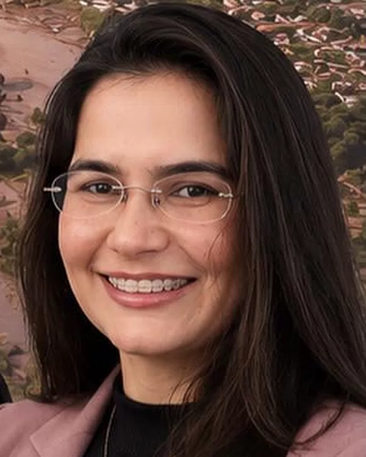

Vivian Mol
Vivian M. Mol Alves, OAB/MG 111.645
Direito Previdenciário
Responsável pelos pedidos e pelas ações que envolvem o INSS: aposentadorias, auxílios, salário-maternidade, BPC/LOAS, pensão por morte e revisões, com atenção especial a quem vive do trabalho no campo. Integra a Comissão de Direito Previdenciário da 43ª Subseção da OAB/MG, em Governador Valadares (triênio 2025/2027).
Falar com a Vivian